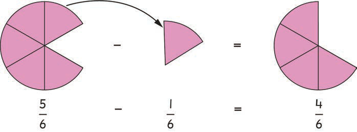

3.
Remove one out of six parts of the circle.
4.
Write in numerals the part removed.
5.
Draw and shade four out of six of the remaining parts of the circle.
6.
Write in numerals the fractions of the remained circle.
The previous steps can be illustrated as follows:

Therefore,
Example 3
Find the value of
Solution
Subtract numerators as you perform usual subtraction of numbers.The denominator does not change.
Therefore,